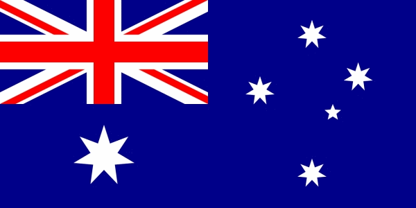
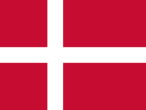

Speedway GP - coroczna seria turniejów, wyłaniająca najlepszych z grona żużlowców. Prowadzone są przez Międzynarodową Federację Motocyklową od 1936 roku. Turnieje finałowe poprzedzone są zazwyczaj skomplikowanym systemem eliminacji krajowych i międzynarodowych. Do 1994 roku mistrza wyłaniano podczas finału jednodniowego, od 1995 roku najlepsi zawodnicy uczestniczą w cyklu turniejów Grand Prix IMŚ – mistrzem zostaje zwycięzca klasyfikacji generalnej cyklu.
| Sezon | Zwycięzca | |
| 2018 | Tai Woffinden |  |
| 2017 | Jason Doyle |  |
| 2016 | Greg Hancock |  |
| 2015 | Tai Woffinden | |
| 2014 | Greg Hancock | |
| 2013 | Tai Woffinden | |
| 2012 | Chris Holder | |
| 2011 | Greg Hancock | |
| 2010 | Tomasz Gollob |  |
| 2009 | Jason Crump | |
| 2008 | Nicki Pedersen |  |
| 2007 | Nicki Pedersen | |
| 2006 | Jason Crump | |
| 2005 | Tony Rickardsson |  |
| 2004 | Jason Crump | |
| 2003 | Nicki Pedersen | |
| 2002 | Tony Rickardsson | |
| 2001 | Tony Rickardsson | |
| 2000 | Mark Loram | |
| 1999 | Tony Rickardsson | |
| 1998 | Tony Rickardsson | |
| 1997 | Greg Hancock | |
| 1996 | Billy Hamill | |
| 1995 | Hans Nielsen | |